Experiencia de Usuario (UX)
Antes, publicidad...
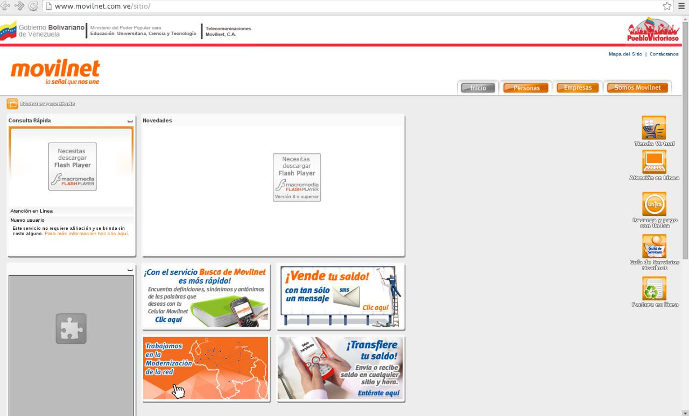 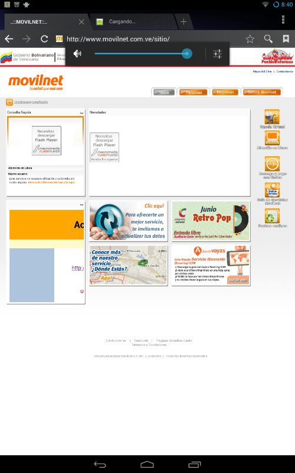 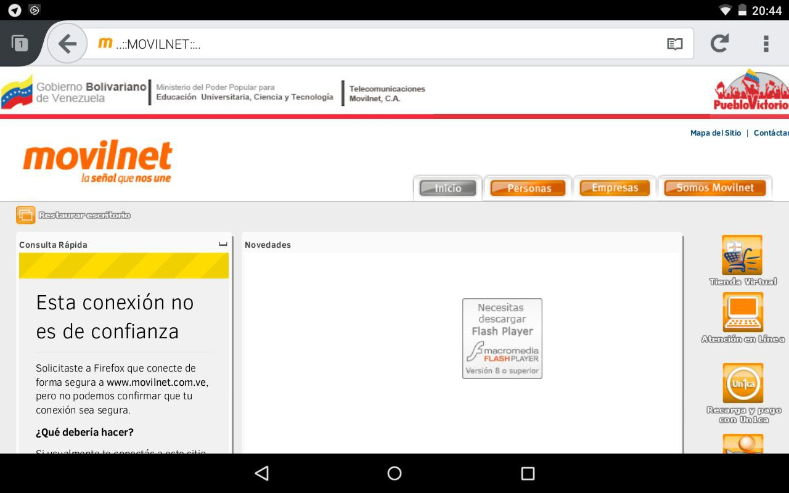 Desktop Tablet Mobile
Definir Experiencia de Usuario (UX) como
producto final y enfoque de desarrollo de aplicaciones.
La idea central es crear un enfoque de desarrollo ágil: pero, ¿qué es Ágil?
¿Qué es para ti UX?
¿¿¿
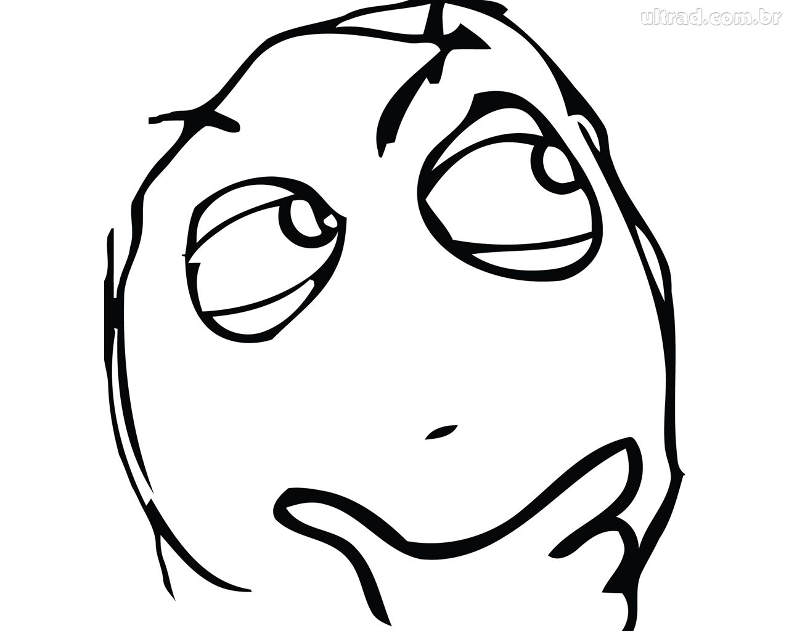???
¿Qué NO es UX?
UX no es...- Diseño de interfaces (pantallas).
- Un único paso en un proceso macro.
- Enfocado a una tecnología o a un paradigma.
- Solo definir la "usabilidad" de un producto.
- Únicamente definir al usuario
- Caro.
- Sencillo.
- El rol de una única persona.
- Una disciplina más
- Una elección.
¿Qué es UX?
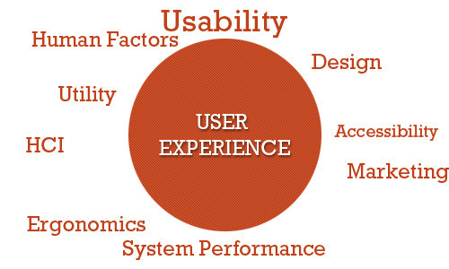- Como el usuario se siente interactuando con el
sistema. (look & feel) - Centrado en usuarios y/o en datos, no en procesos.
- Multiparadigma y multipropósito
- La integración de muchos factores.
- Intenta describir interacciones de usuarios sobre
implementaciones de código. - Transversal y multidisciplinario.
- Transparente a la interfaz de acceso a datos.
- Ágil.
¿Por qué UX?
Consistencia
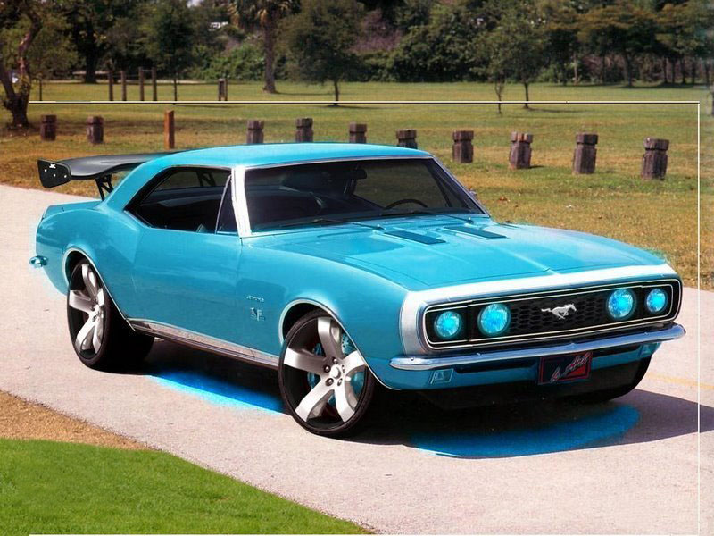 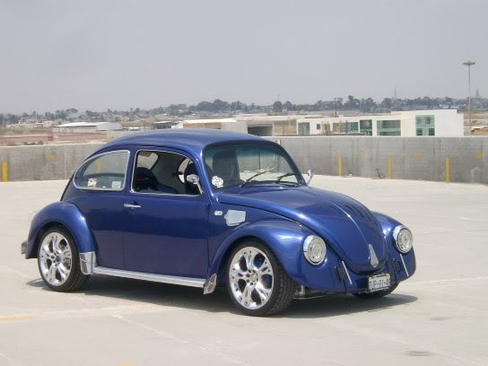Responsivo por defecto
Accesible.
http://www.w3.org/standards/webdesign/accessibilityCon identidad propia.
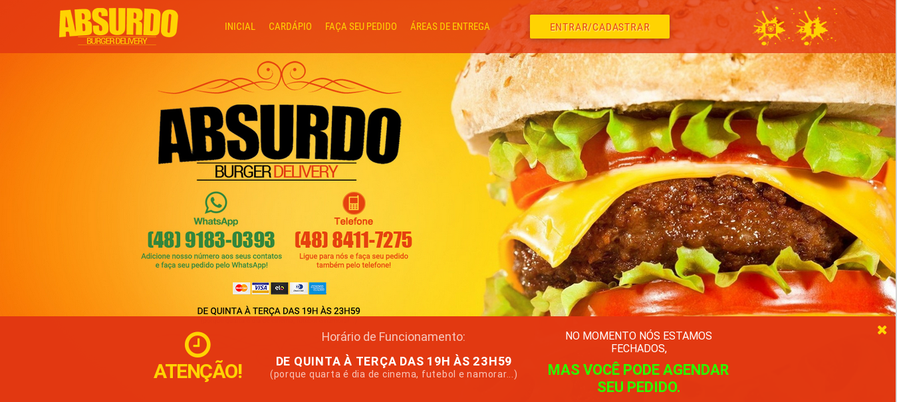Útil
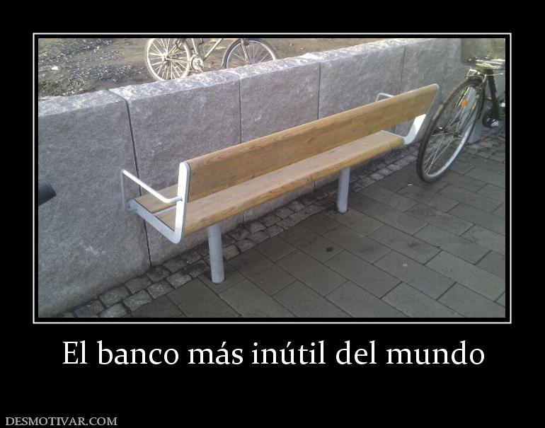Escalable.
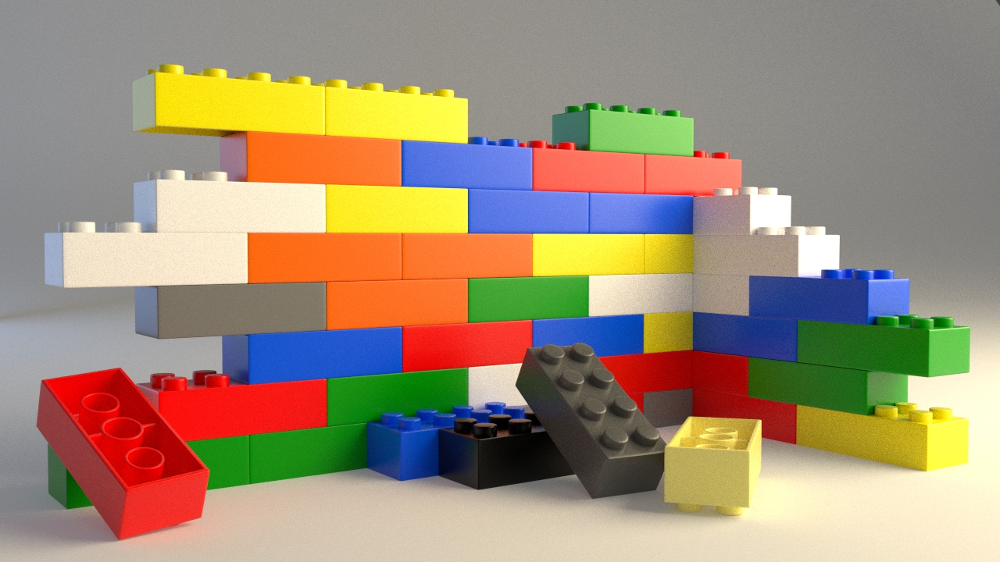Garantizar Interoperabilidad.
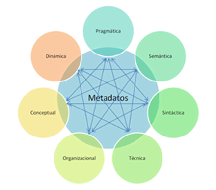Conceptos que involucra UX.
- TDD (Desarrollo orientado a pruebas).
- BDD (Desarrollo dirigido por comportamientos).
- DDD (Desarrollo dirigido por datos).
- Mocking (Prototipado funcional e incremental).
- Wireframing (Maquetación funcional de UI).
- Arquitecturas loose coupling.
- Workflows (flujos automatizados de trabajo)
- Servidores de integración continua. (Git, Mercurial, etc.)
UX Centrado en Usuarios...
FacebookAmazone-BayTrello
UX Centrado en Datos...

TwitterInstagramFlickrReddit
Planos de visión y enfoque
- Plano de la Estrategia: Se definen claramente los
datos con los que va a interactuar el usuario<+> Catálogo de datos y "Storyboard" - Plano del Alcance: Se caracterizan usuarios, así
como los límites del espacio de interacción.<+> Catálogo de usuarios y dependencias - Plano de la Estructura: Se definen interacciones y
respuestas desde el punto de vista arquitectónico.<+> API y Modelado de Datos - Plano del Esqueleto: Se definen contenedores
genéricos de acceso a datos.<+> Mocking + Testing - Plano de la Superficie: Se definen interfaces de usuario.
<+> UX (UI + Interacciones)